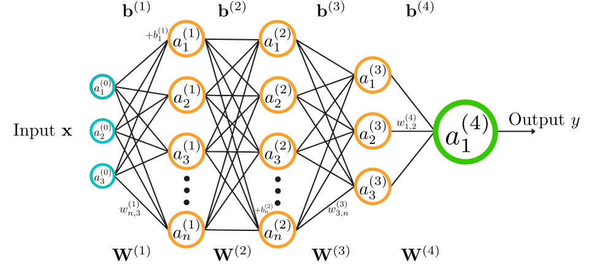

Agentic AI in Action:
Transforming Evidence Collection & Data Checking
Moving AI from answering questions to doing the work — searching, gathering evidence, scoring, and drafting.
Dr Simon Wang · Lecturer in English & Innovation Officer, the Language Centre, HKBU
Tap QR (top-right) to open these slides on your phone.
The ChatGPT moment
In Nov 2022, ChatGPT took the world by storm — an LLM that writes humanlike text in reply to a prompt, showing a real understanding of what you asked.
And it turns out LLMs don't just write text — they can write code too.
An LLM writes code,
not just text
A text-only LLM trips over "how many r's in strawberry?" — but the moment it writes code, the answer is exact.
That's agentic AI: the model generates code to solve problems it can't solve with text alone — calling tools and APIs to do real work.

💡 The divide — chatbot users get text back; agentic-AI users get code that acts on computers through APIs.
Code is the bridge
ambiguous · flexible
human-readable + machine-executable
rigid · precise
Code is a formal language halfway between human and machine — and it can control the whole computer: operating system, hardware, apps.
So code means automate · analyse · create — and in agentic AI, the model writes code to call tools and APIs for tasks far beyond text.
Ready-made tools,
composed by code
🧠 Language tools
spaCy · NLTK · Transformers — text processing that predates LLMs
📊 Data & charts
Pandas · NumPy · Matplotlib · Seaborn · Plotly
🖸️ Web & scraping
BeautifulSoup · Scrapy · Selenium — fetch & extract the live web
An agent composes these bricks with the LLM: code calls the tools, the model decides which and when.
GUI → CLI → API
Each interface trades ease of use against power.
GUI is easy but limited · CLI/API are powerful but demand learning — the designer's eternal struggle.
🤖 AI is the new bridge — describe the task in plain words, and the LLM writes the API code for you.
AI writes the code
that talks to APIs
Describe a task in plain language and get working code — automate tasks, analyse data, build applications. That's what powers an agent.
Why API > GUI for this: with code you can programme the whole workflow and feed materials to the LLM programmatically — no copy-paste, no click-by-click.
From chatbots
to agents
A revisit of the earlier point — this workshop is about moving from talking to acting.
Talks
You ask, it answers. The work stays with you — the model only produces text.
Acts
It calls tools, follows a plan, and produces a finished artefact — not just a reply.
What "agentic" means here
- 🔎 Search
- 📄 Gather
- 🧮 Score
- ✍️ Draft
Four verbs. Instead of one answer, the agent runs a pipeline and returns ranked evidence, scores, and drafts a human can review.
Agentic = act autonomously: the model decides which tools to call, in what order, based on what it sees. The intelligence is in those decisions.
🚧 Example — fix a bug: edit the file → run the tests → still failing? call the debugger → retry, until the tests pass.
Why not just a chatbot?
A chatbot gives you text; an agent gives you code that acts. So the honest question is —
- You paste links & data, then copy results back out by hand
- No tools — can't search the live web, open a PDF, or read a table
- No fixed rubric — scores and checks drift or get invented
- One-shot text reply, not a repeatable pipeline
- Reads your files and criteria directly
- Calls real tools — search, fetch, parse, validate
- Applies the exact rubric / rules every time
- Returns structured, ranked, traceable output
💡 The golden test — does the agentic tool actually outperform the chatbot at the real task? It's also the hardest question to answer when introducing agents.
Input → Process → Output
Every AI system — and every task — can be designed as three stages. It's the model we'll use to design and teach every tool in this workshop.
↺ Feedback from the output loops back to improve the input and the process.
What you feed in matters
Garbage in, garbage out — the quality of the output is set by the quality of the input, and by how well it's processed.
Inputs shape the result
The materials and information you choose upfront already decide a lot of the outcome — good input, better output.
Design the input on purpose
The platform can require certain inputs — that's part of the design, and part of guiding the work.
Bring in more than the user typed
Add the model's own knowledge (prompts) and real tools — web search, crawlers — as inputs.
Input ↔ process is a loop
They're not cleanly separated: a processing step often feeds back into what counts as input.
Agents handle harder input
An agent can write code to convert a PDF to plain text or re-shape a spreadsheet — a chat window can't. More input types, processed the way you choose.
Decide what stays human
The core design question: which steps do humans keep, and which does AI do?
Assist, don't replace
The goal is a tool that helps people work — not one that removes them.
Colleagues, not students
ORIP are professionals: no training needed — the aim is getting the task done well, together.
Keep humans in the loop
People review, approve, and correct at checkpoints — the AI does the first pass, people make the call.
Output that fits the next step
Format matters
HTML for the browser, PDF/Word for documents, Markdown when the output feeds the next system — human- and machine-readable.
Quality needs a human
AI-generated output is best produced under human guidance — and still needs quality control afterwards.
Close the loop
Ask users (and team leads) to evaluate the system's output — that feedback improves the whole workflow.
Two use cases today
OIRP Evidence Assistant
Find + score public web evidence for the THE Sustainability Impact Ratings.
CDCF Data Checker
Real-time data checking + trend analysis for CDCF Table 20.1 submissions.
Both tools follow the same Input → Process → Output model — designed with the human in the loop.
📝 Note — workflows were discussed by email so far. If the team wants to automate more, we should map the workflow + automation requirements together.
OIRP Evidence Assistant
Find + score public web evidence for the THE Sustainability Impact Ratings.
▶ Watch it run the boxes light up in order as the agent calls each tool.
🧑💼 Human in the loop — OIRP reviews + submits; a colleague publishes drafted content.
⏱️ The manual way — search each indicator, open pages, re-score by eye, draft by hand: hours per indicator. The agent does it in minutes, with a trace.
Key finding 17.2.1 scored 1/3 — real activity, wrong wording (the "keyword pitfall"). Try it enter `test1234` in the AI Consultant — valid until 12:00 noon, 19 Aug 2026 (HKT).
CDCF Data Checker
CDCF = Common Data Collection Framework — Table 20.1 Student Enrolment (UGC-funded Long Programmes). Units upload their table; the tool checks it before submission to OIRP.
▶ Watch it run the boxes light up in order as each check runs on the table.
🧑💼 Human in the loop — units fix + confirm; OIRP does the high-level check.
⏱️ The manual way — open the table, eyeball codes and totals, compare against last year by hand. The checker runs every rule on every row in seconds.
Key finding 6 planted errors — each rule catches a different one. Try it enter `test1234` in the AI Consultant — valid until 12:00 noon, 19 Aug 2026 (HKT).
Try them now
Both tools are running on Railway. Scan the QR (top-right) to open these slides, or jump straight to a tool.
💬 In each tool's AI Consultant, enter the workshop code `test1234` in either tool — shared Poe key, valid until 12:00 noon, 19 Aug 2026 (HKT).
Questions?
Agentic AI turns your tools from assistants that answer into colleagues that act.
Images via Wikimedia Commons: Pixabay (CC0) · Heptagon (public domain) · Dennis (CC BY 4.0) · QuantuMechaniX8 (CC0).